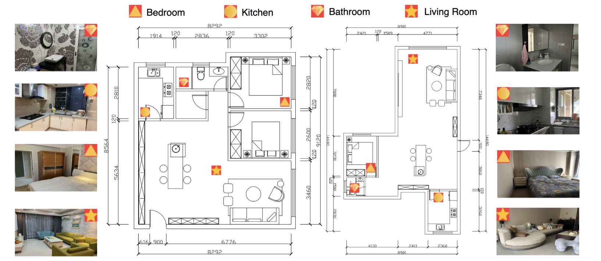

A Large-Scale Multimodal Dataset and Benchmark for Human Action Recognition, Understanding and Reasoning
Siyang Jiang, Mu Yuan, Xiang Ji, Bufang Yang, Zeyu Liu, Lilin Xu, Yang Li, Yuting He, Liran Dong, Wenrui Lu,
Zhenyu Yan, Xiaofan Jiang, Wei Gao, Hongkai Chen, Guoliang Xing.
The Chinese University of Hong Kong (CUHK), University of Illinois Urbana-Champaign (UIUC), University of Pittsburgh (Pitt), Columbia University (Columbia)
CUHK-X is a comprehensive multimodal dataset containing 58,445 samples across seven modalities
designed for human activity recognition, understanding, and reasoning. Unlike existing datasets that focus primarily on recognition tasks,
CUHK-X addresses critical gaps by providing the first multimodal dataset specifically designed for Human Action Understanding (HAU)
and Human Action Reasoning (HARn).
The dataset was collected from 30 participants across diverse environments using our novel framework
- a prompt-based scene creation approach that leverages Large Language Models (LLMs) to generate logical and spatio-temporal activity descriptions.
This ensures both consistency and ecological validity in the collected data.
CUHK-X provides three comprehensive benchmarks: HAR (Human Action Recognition), HAU (Human Action Understanding),
and HARn (Human Action Reasoning), encompassing eight distinct evaluation tasks. Our extensive experiments demonstrate
significant challenges in cross-subject and cross-domain scenarios, highlighting the dataset's value for advancing robust multimodal human activity analysis.
Highlights
🎯 First of its Kind
First multimodal dataset specifically designed for Human Action Understanding (HAU) and Human Action Reasoning (HARn) beyond traditional recognition tasks.
📊 Large-Scale & Diverse
58,445 annotated samples across 7 synchronized modalities from 30 diverse participants, covering both indoor and outdoor environments.
🤖 Framework
Novel LLM-powered framework for generating logical, consistent activity scenarios with human-in-the-loop validation.
🔬 Three Benchmarks
Comprehensive evaluation across HAR, HAU, and HARn with 8 distinct tasks, from basic recognition to complex reasoning.
🌍 Real-World Impact
Designed for healthcare monitoring, smart environments, and privacy-preserving human activity understanding applications.
📈 Challenging Results
Reveals significant challenges in cross-subject and cross-domain scenarios, pushing the boundaries of current SOTA models.
🏆 Key Achievements
✓ Synchronized multi-sensor data with precise temporal alignment
✓ Comprehensive evaluation of state-of-the-art multimodal models
✓ Open-source framework and benchmarking tools
Data Acquisition Infrastructure
The CUHK-X dataset was systematically collected using a comprehensive multi-sensor platform designed to capture
complementary modalities with precise temporal synchronization. Our instrumentation framework consists of seven
distinct sensing modalities, each contributing unique perspectives for robust human activity analysis.
Sensor Specifications and Technical Details
📷 RGB-D Sensing Module
Device: Vzense NYX 650 Time-of-Flight Camera
RGB Resolution: 1920×1080 @ 30 FPS
Depth Resolution: 640×480 @ 30 FPS
Depth Range: 0.15m - 5.0m with ±1% accuracy
Field of View: 69° (H) × 42° (V) for RGB, 70° (H) × 55° (V) for depth
Interface: USB 3.0 with hardware synchronization capabilities
Range Resolution: 3.75 cm with maximum range of 6m
Velocity Resolution: 0.13 m/s with ±9.16 m/s range
Angular Resolution: 15° azimuth, 60° elevation
Frame Rate: 20 FPS for real-time motion tracking
🌡️ Thermal Imaging Array
Device: FLIR Lepton 3.5 Microbolometer
Spectral Range: 8-14 μm longwave infrared
Resolution: 160×120 pixels @ 9 Hz
Temperature Range: -10°C to +80°C scene temperature
Thermal Sensitivity: <50 mK NETD typical
Field of View: 57° × 44° with fixed focus
📱 Inertial Measurement Unit
Device: MPU-9250 Nine-Axis Motion Tracking
Accelerometer: ±2/±4/±8/±16g range, 16-bit ADC
Gyroscope: ±250/±500/±1000/±2000 dps, 16-bit ADC
Magnetometer: ±4800 μT range with 14-bit ADC
Sampling Rate: Up to 1 kHz for accelerometer and gyroscope
Interface: I2C/SPI with interrupt-driven data ready
Synchronization and Calibration Protocol
Temporal Synchronization: All sensors are synchronized using a master clock signal generated by the
host computer, ensuring sub-millisecond accuracy across modalities. Hardware timestamps are recorded for each frame
to enable precise temporal alignment during post-processing.
Spatial Calibration: Intrinsic and extrinsic camera parameters are determined using Zhang's method
with a checkerboard calibration target. Cross-modal calibration matrices are computed to register depth, thermal,
and RGB coordinate systems to a common reference frame.
Data Validation: Each recording session includes calibration verification sequences to ensure
measurement accuracy and detect potential sensor drift or misalignment.
Hardware Systems
The data acquisition system operates on a distributed architecture where individual sensor modules communicate
with a central processing unit via high-speed interfaces (USB 3.0, Ethernet). Real-time data streaming and
buffering capabilities ensure no frame drops during extended recording sessions. The system supports both
triggered and continuous acquisition modes, with automatic quality assessment and error recovery mechanisms.
Environment Setup
To reproduce our results and work with the CUHK-X dataset, follow these comprehensive setup instructions:

Dataset Overview
CUHK-X represents a significant advancement in multimodal human activity datasets, featuring:
Seven Synchronized Modalities: RGB, Infrared (IR), Depth, Thermal, IMU, mmWave Radar, and Skeleton data
Large-Scale: 58,445 annotated action samples from 30 diverse participants
Dual Data Structure: Both singular actions and sequential activities for temporal reasoning
Rich Annotations: LLM-generated captions with human-in-the-loop validation
Environmental Diversity: Indoor and outdoor settings with varying conditions
Modality Specifications
🎥 RGB Video
Standard color video recordings for traditional visual analysis
🌡️ Infrared (IR)
Thermal imaging for robustness to lighting conditions
📏 Depth
3D spatial information from depth cameras
🔥 Thermal
Heat signature analysis for unique behavioral cues
📱 IMU
Inertial Measurement Unit for motion dynamics
📡 mmWave Radar
Privacy-preserving motion detection
🦴 Skeleton
3D pose estimation and joint tracking
Data Visualization
Depth
Thermal
IMU
Benchmarks & Tasks
CUHK-X provides three comprehensive benchmarks that progressively increase in complexity, from basic recognition to advanced reasoning:
🎯 HAR - Human Action Recognition
Objective: Traditional action classification across modalities
Cross-subject evaluation (LOSO protocol)
Cross-domain performance analysis
Long-tail distribution handling
Multimodal fusion strategies
🧠 HAU - Human Action Understanding
Objective: Comprehend actions through contextual integration
Action Captioning: Generate natural language descriptions
Emotion Analysis: Identify emotional states
Sequential Reordering: Organize actions chronologically
Action Selection: Choose relevant actions from candidates
🔮 HARn - Human Action Reasoning
Objective: Infer intentions and causal relationships
Next Action Prediction: Predict likely subsequent actions
Our innovative framework leverages Large Language Models to generate consistent, logical activity descriptions
that participants then perform. This approach ensures:
Logical Consistency: Activities follow natural progression and causality
Spatio-temporal Coherence: Actions are contextually appropriate
Human-in-the-Loop Validation: Quality assurance for generated scenarios
Scalable Annotation: Efficient generation of diverse scenarios
Experimental Results
Key Findings
Our comprehensive evaluation across the three benchmarks reveals several important insights from extensive experiments on state-of-the-art models:
🎯 HAR Performance (Cross-Subject LOSO)
Modality
Baseline
w/ Contrastive
w/o Cross-domain
RGB
45.2%
52.8%
56.56%
IMU
38.7%
44.3%
48.9%
Skeleton
41.5%
47.2%
51.3%
🧠 HAU Performance (Selected Tasks)
Model
Captioning (BLEU-1)
Emotion Analysis
Sequential Reordering
QwenVL-7B
55.97%
77.77%
68.5%
VLLaVA-7B
22.32%
74.2%
66.8%
InternVL-8B
0.59%
35.35%
45.3%
🔮 HARn Key Insights
Model Scale Effect: Larger models (7B+) consistently outperform smaller variants
Modality Advantage: Depth and IR often superior to RGB for reasoning tasks
Reasoning vs Captioning: Specialized reasoning models show significant advantages
Context Dependency: Temporal context crucial for next action prediction accuracy
Dataset Organization & Tasks
📊 Small Model Data
Focus: Singular, well-defined actions
Actions: 40+ different action categories
Samples: 30,000+ individual action instances
Purpose: Traditional HAR evaluation and baseline comparison
🧠 Large Model Data
Focus: Sequential actions performed consecutively
Features: Multi-step activity sequences with logical flow
Purpose: Temporal and emotional analysis, complex reasoning
Applications: HAU and HARn evaluation tasks
Challenging Aspects & Research Opportunities
Key Research Challenges
Cross-Domain Generalization: Performance drops significantly in cross-domain scenarios, highlighting the domain adaptation challenges in real-world deployment
Long-Tail Distribution: Realistic but challenging class imbalance with rare actions requiring specialized handling techniques
Subject Variability: Individual behavioral differences create substantial challenges for person-independent recognition systems
Temporal Complexity: Sequential reasoning demands sophisticated understanding of action causality and temporal dependencies
Multimodal Integration: Optimal fusion strategies vary significantly across tasks and environmental conditions
Technical Insights & Analysis
🔍 Model Scale Effects
Systematic evaluation reveals that larger models (7B+ parameters) consistently outperform smaller variants across all three benchmarks. This trend is particularly pronounced in reasoning tasks where model capacity directly impacts performance.
📊 Modality Contributions
Depth and IR modalities often provide richer contextual information than RGB for understanding and reasoning tasks, challenging conventional RGB-centric approaches and highlighting multimodal advantages.
Dataset Request: Please contact for access information
Acknowledgments: We thank all participants who contributed to the CUHK-X dataset collection. Special acknowledgments to
the CUHK research team and collaborators who made this comprehensive multimodal dataset possible.
The hardware setup and synchronization infrastructure were crucial for achieving the quality and scale of CUHK-X.